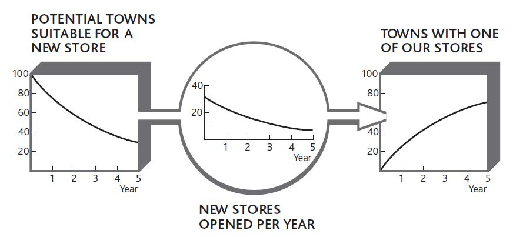
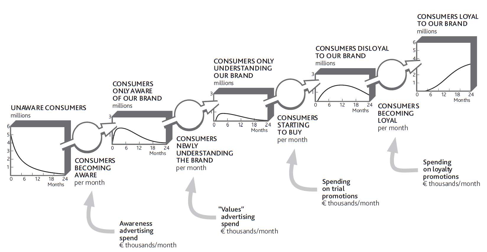

Trying to build resources can be frustrating. For example, take hiring: Suitable staff may be scarce, and you may have to fight your competitors for the limited number of good people. Even if you win that battle or you have no strong competitors, potential staff may be looking at other opportunities that have nothing to do with the market in which you operate. A customer service person at Ryanair could leave to work in a hotel or even to become a teacher, for example.
At least with staff, there may be a continuous stream of new talent coming onto the market. Many other resources are finite. Once everyone has a cell phone, for example, there is no one left to be won and sales efforts have to switch to upgrades and luring people away from rivals. Similarly, chain stores run out of new locations, airlines run out of good routes that passengers may want to fly, and so on.
To capture this phenomenon, we need to be explicit about the stock of potential resourcesResources that have to be developed if they are to be turned into active resources. as well as the stock of developed resourcesResources that have been brought newly into a business or a business's internal resources that continue to be developed., plus the rate at which we convert one to the other. Figure 3.7 "Developing Potential Locations for a Retail Chain" shows these elements for a new retail company that has developed a specialty store format and now wants to build outlets in all the towns where it may be successful. On the left are the towns thought to have enough of the right consumers to provide the demand for the stores; there are 100 of these at the outset. On the right is the increasing number of stores operating, and in between is the rate at which stores are being opened.
Figure 3.7 Developing Potential Locations for a Retail Chain
Understanding how to manage the development of resources from a potential pool is vital.
The story of Alibaba.com in Chapter 1 "Performance Through Time" is a great example of a company identifying a specific potential resource—the large number of smaller Chinese companies seeking to go global—and developing that potential very rapidly. Once that opportunity was well exploited, it moved on to repeat the trick in other markets.
The challenge of resource development is not confined to the bringing of potential resources into your business system: Certain resources must continue to be developed within the organization. The most common of these is staff, though the same challenge also applies to products and customers.
Figure 3.8 "The Staff Promotion Chain" shows an organization that has become badly out of balance because the flows of people through its internal development chain have been running at the wrong rates. At the most senior levels, promotions appear to be happening slowly, at just six per year. But turnover among senior staff is also low, so the upper ranks have become crowded.
The organization has clearly been promoting experienced staff to senior positions faster than other senior people have been leaving. But things are not quite that simple. Promoting 6 experienced people out of 50 each year, as we were in year 1, meant that experienced people had to wait more than 8 years for promotion. By the time we get to year 5, the wait has grown to 20 years, because of the 100 experienced staff we have, only 5 are promoted each year. So reducing the promotion rate risks leaving experienced staff frustrated and may increase the rate at which they leave. Juniors, on the other hand, are not being hired fast enough to replace those who are leaving or are being promoted.
Figure 3.8 The Staff Promotion Chain

Figure 3.8 "The Staff Promotion Chain" illustrates a further critical principle when resources flow from state to state. The sum of these stocks must add up to the total number of staff. They are said to be “mutually exclusive” (i.e., any resource item can appear in only one state at any time) and “collectively exhaustive” (i.e., taken together, they account for all of this resource in the system)—a principle known as MECE (pronounced “mee-see”).
This principle is easily overlooked. It is common, for example, for management to continue talking about a market’s total potential even after most of that potential has already been taken up.
This is why some companies pursue a seemingly perverse staff policy known as “up or out,” in which people are expected to seek promotion and are helped to leave if they are not successful. This can apply all the way up to top levels, where retirement or moving on to other organizations is also encouraged. The policy is all about making space for talented people to progress.
The last extension of this resource development idea concerns an almost universal phenomenon: the development of awareness, understanding, and choice among customers, employees, investors, donors, and other stakeholder groups (Desmet et al., 1998; Finskud, 2009).
We can start by considering a new consumer brand: a soft drink such as Coca-Cola’s Powerade sports drink, for example. An individual is unlikely to switch on a single day from complete ignorance of the brand to being a regular and loyal consumer. So we do not simply have a tank of “potential” consumers and a tank of “loyal” consumers; rather, consumers move through a series of stages (Figure 3.9 "The Choice Chain for Consumers"):
Now, these pumps are expensive to drive. Every advertising and promotional activity costs money, so it is vital to make judicious choices about which ones to drive and how fast, and how to change priorities as time passes. Moreover, while you are trying to do all this, your pool is draining back down the hillside: Consumers are forgetting why your brand is important to them, choosing to buy other brands, or simply forgetting about it altogether, hence the continuing efforts of even the strongest brands to keep reinforcing consumer choice.
Figure 3.9 The Choice Chain for Consumers
In principle, it looks as if you should drive the lower pumps first, then slow them down while speeding up the upper pumps as your pool gets pushed up the hill. But this qualitative approach simply will not do; you need to know how much of each activity to do at each moment. Many firms get these choices badly wrong.
One innovative industrial products firm consistently underinvests in all stages of this chain. The only reason it can boast of the high proportion of sales derived from new products is that this underinvestment forces sales managers to switch their effort from older products to the latest novelty. No sooner has the company pumped customers to within reach of becoming loyal then it abandons the effort and they slip back down again into the arms of grateful rivals!
In contrast, the pharmaceutical industry commonly overspends on sales. Sales representatives constantly struggle to get to see doctors who already prescribe their product and fully intend to continue doing so. With everyone in the industry making the same futile efforts, it is hardly surprising that one study found only 20% of sales calls in the United States even got to see the doctor and less than half of these calls were remembered (Elling, Fogle, McKhann, & Simon, 2002).
Similar development chains arise for other resources (Sterman, 2000, chap. 12). For some, however, such as product development, you have direct control over how individual items move through the system. Nevertheless, it is still important to know the quantity of resources at each stage and be aware of how your decisions are affecting their development. It is common, for example, for companies to invest effort and cost in developing promising products, only to fail to finalize them and drive them into the market.
Work out what is happening over time to the quantity of your resources and what you want to happen in the future. How are the flows of each resource changing? Can you complete a chart like Figure 3.3 "The Change in Customer Numbers Over Time" for your customers, staff, and other critical resources?
Understand the scale of potential resources you are developing. In the case of customers, useful questions to ask include the following: